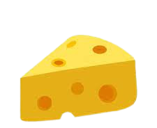
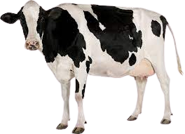
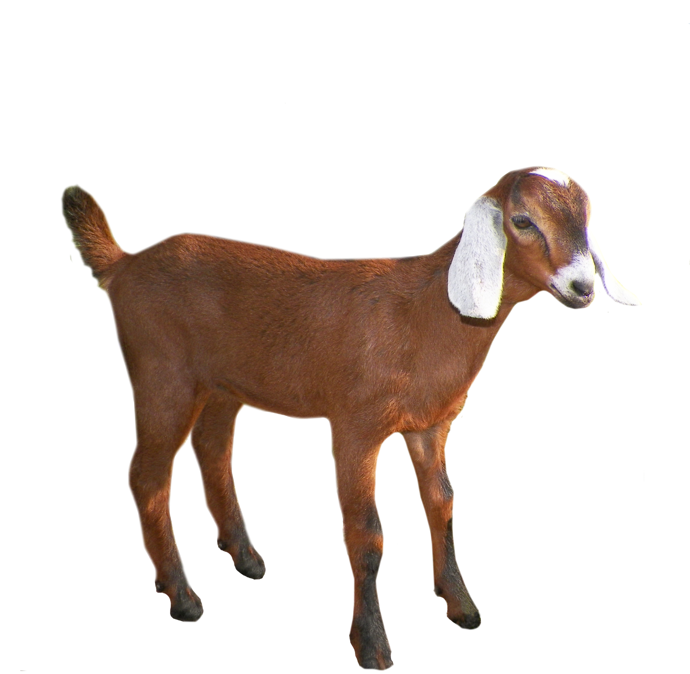
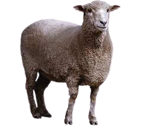

Histoire
Petit et grand venez en apprendre sur l'histoire et les procédés de fabrication du fromage
Le cycle de fabrication pour les enfants
Pour fabriquer du , on a besoin de 
3 animaux produisent du lait : la , la  et la 
Étapes :
- Le Caillage : Solidifier le par acidification naturelle de ses propres ferments. Le passe alors de l’état liquide à l’état solide.
- L’Égouttage : Vider le caillé de son petit (une partie de son eau)
- L’Affinage : Laisser les dans des moules de quelques jours à quelques mois dans une cave tout en leur fournissant des soins

La France est le pays où l’on retrouve le plus de fromages différents (plus de 300 sortes).